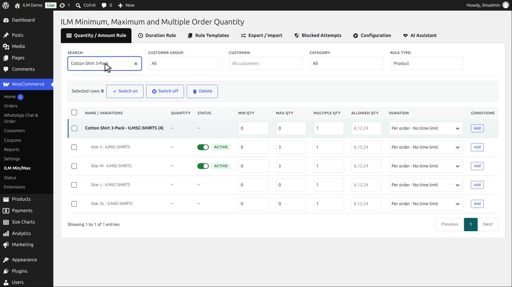
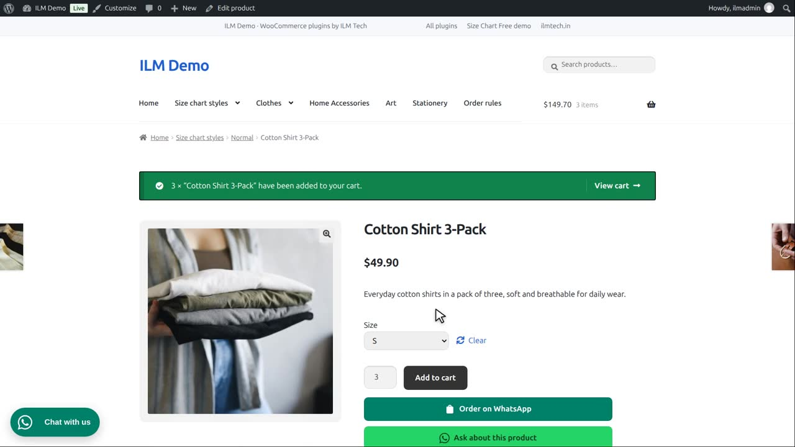
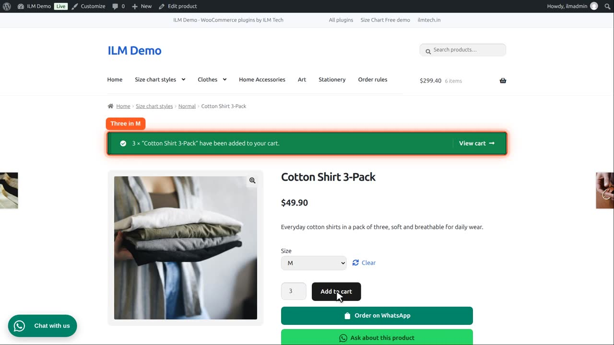
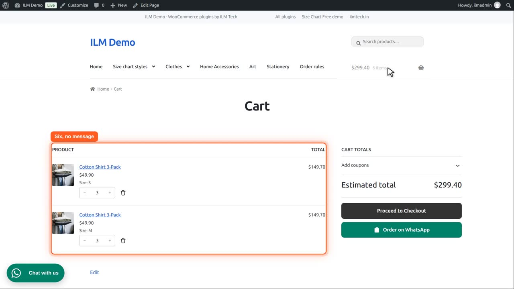
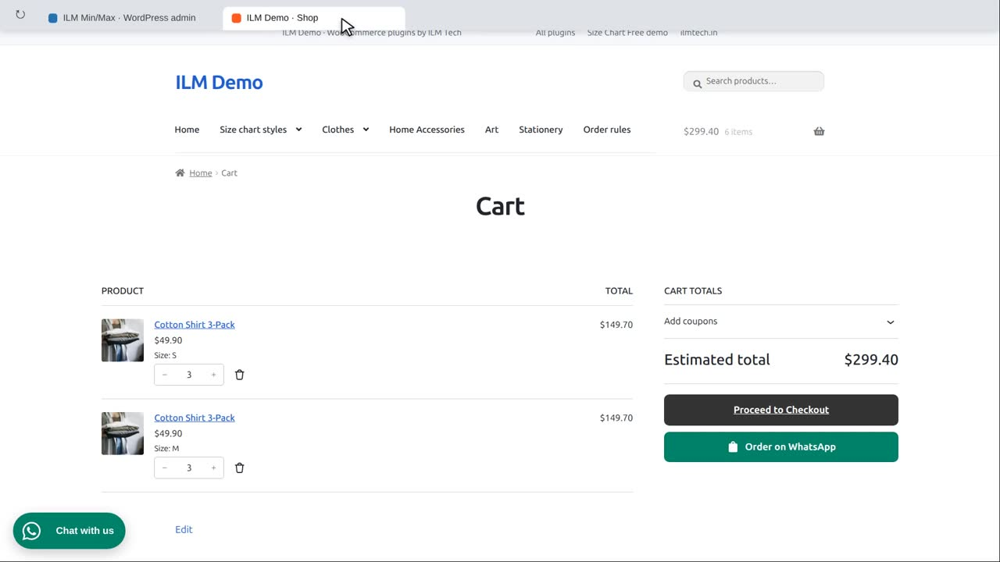

Attributes: On checks the quantity rule against each variation on its own; Off lets the customer mix variations of the same product together to reach the limit.
The Cotton Shirt 3-Pack has a rule on two of its variations: sizes S and M, each a maximum of three.

Attributes is enabled. Each variation is checked on its own against its rule.
So a customer can take three in size S,

and three more in size M.

Six shirts in the cart, and no message.

Now disable Attributes. The variations of a product are counted together.

The same cart now has six of one product, so it asks for at most three in total, and checkout refuses the order until it is three. A rule on the product row itself always counts all variations together.